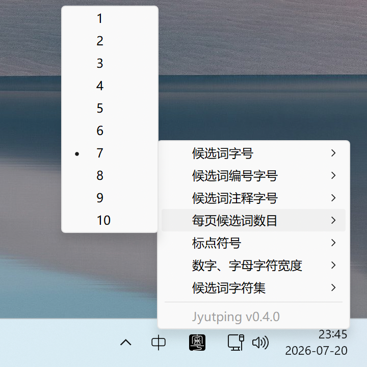

兼容系统: Windows 11 以及 Windows 10 (64-bit)
兼容CPU: x86_64 arm64
最近出版: 2026 年 7 月 21 日
下载一般电脑版: jyutping-v0.4.0-x64.exe
下载ARM电脑版: jyutping-v0.4.0-arm64.exe
# Bytes
27587719 jyutping-v0.4.0-x64.exe
27565627 jyutping-v0.4.0-arm64.exe
# SHA-256
55ce03b597cf50bce3416756a12f80492665f6c298cd011b0bb7b08263f91430 jyutping-v0.4.0-x64.exe
3aff4fabc73307d068401a907315ba1ce10b5ee74c4499bf9c89f8b4d51ec18d jyutping-v0.4.0-arm64.exe
使用粤拼输入法时，右键点击系统右下角的 中 字，即会显示设置界面。
可选择字形标准、每页候选词数量、候选词字号大小等选项。

粤拼输入法会用到很多不太常见的字词，而电脑自带字体可能显示不全或不佳。
推荐安装以下 全部 几款字体：
Inter
尚古黑体
遍黑体
MiSans L3
| 快捷键 | 模式以及字形 |
|---|---|
| Shift | 切换中文／ABC 模式。 |
| Shift + Space | 切换全宽／半宽数字、字母。 |
| Ctrl + . | 切换中文／英文标点符号。 |
| Ctrl + Shift + 1 | 切换至传统汉字。 |
| Ctrl + Shift + 2 | 切换至传统汉字 • 香港标准。 |
| Ctrl + Shift + 3 | 切换至传统汉字 • 台湾标准。 |
| Ctrl + Shift + 4 | 切换至简化字。 |
| 快捷键 | 候选词以及输入 |
|---|---|
| Arrow Up ↑ 或 Shift + Tab | 移至上一个候选词。 |
| Arrow Down ↓ 或 Tab | 移至下一个候选词。 |
| - 或 [ 或 Arrow Left ← | 上一页候选词。 |
| = 或 ] 或 Arrow Right → | 下一页候选词。 |
| Esc | 取消当前候选输入。 |
| Ctrl + Shift + Backspace | 从输入记忆移除当前候选词。 |
| 反查前缀键 | 反查方式 |
|---|---|
| r | 普通话拼音反查粤拼。例如: rlin → 林。 |
| v | 仓颉五代反查粤拼。例如: vdd → 林。 |
| x | 笔画输入反查粤拼。例如: xwsad → 木。 |
| q | 拆字输入反查粤拼。例如: qmukmuk → 林。 |
| 声调映射 | 举例 |
|---|---|
| v ⇒ 1 | fanv → fan1 芬 |
| x ⇒ 2 | fanx → fan2 粉 |
| q ⇒ 3 | fanq → fan3 训 |
| vv ⇒ 4 | fanvv → fan4 焚 |
| xx ⇒ 5 | fanxx → fan5 奋 |
| qq ⇒ 6 | fanqq → fan6 份 |
双击 C:\Program Files\Jyutping\unins000.exe 即开始卸载。
如果卸载过程中，弹出提示说无法关闭某个程序，可以尝试：
先将输入法切换到系统输入法，再登出、登录一次电脑（或者重启），然后再开始卸载。
如果你想支持作者开发，欢迎 捐赠赞助